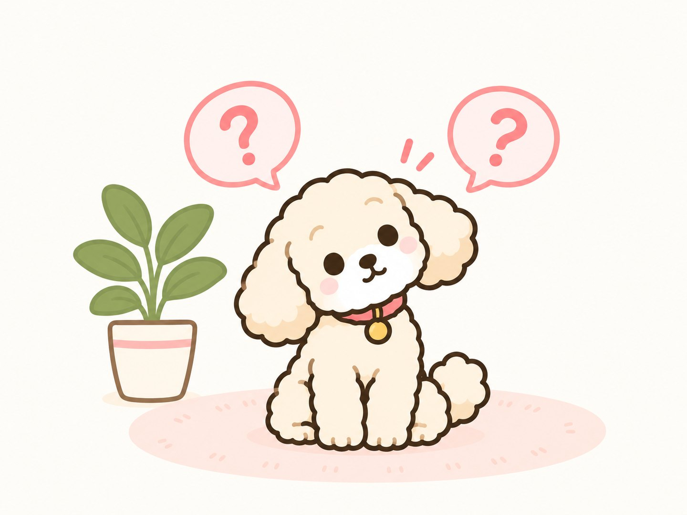

よくあるご質問
お預かり・しつけについて、よくいただくご質問をまとめました。
ここにないことも、お気軽におたずねください。

お預かり・しつけについてのご質問
初めてのお泊まりで、うちの子が不安がらないか心配です。
本番の前に、短いお泊まりで慣らす「仮お泊まり」をご用意しています。少しずつ場所に慣れてから、本番を迎えられます。詳しくはペットホテルのページをご覧ください。
ねこちゃんも利用できますか?
ねこちゃんは環境の変化に敏感なため、性格や普段の過ごし方をうかがってから、お受けできるかを判断しています。料金もそのときにお伝えします。まずはご相談ください。
送迎はありますか?
はい、有料で送迎に対応しています。宇治市内を中心にお伺いしております。わんちゃんの幼稚園への通園などにもご利用いただけます。料金・対応エリアの詳細はお電話でご確認ください。
ワクチンの接種証明は必要ですか?
はい。ほかのわんちゃんと一緒に過ごしていただくため、混合ワクチンと狂犬病予防注射の接種証明をお願いしております。
駐車場はありますか?
駐車場を1台分ご用意しております。お車でお越しの方は、ご予約のときにお伝えください。
お預かりのとき、何を持っていけばよいですか?
いつものフード、首輪・リード、使い慣れたおもちゃやおやつなどをお持ちください。基本的にはご自由で構いませんが、お食事だけは普段と同じものをご用意いただけると、わんちゃんの負担が少なくなります。迷われた場合はご予約の際におたずねください。
お支払い方法を教えてください。
お支払いは現金のみです。
予約のキャンセルはできますか?
ご予定が変わった場合は、できるだけ早めにお電話でご連絡ください。頭数を限定してお預かりしているため、キャンセル料はご利用日の前々日60%・前日80%・当日100%をいただいております。やむを得ない事情の場合はご相談ください。
繁忙期の料金は変わりますか?
ゴールデンウィーク・お盆・年末年始は、ペットホテルの料金が1日あたり500円加算になります。
パピー教室は、いつから参加できますか?
生後2ヶ月ごろから、生後6ヶ月ごろまでの子犬が対象です(初回は生後5ヶ月までが目安)。混合ワクチンの2回目を接種してから2週間以降にご参加ください。全3回・1回1時間で、2週間に1回のペースで通っていただきます。料金は3回で13,500円〜です。
どのトレーニングコースを選べばよいか分かりません。
レッスンWONに通って学ぶならしつけ教室、ご自宅で学ぶなら出張トレーニング、集中的にお任せいただくならお預かりトレーニング、通いながら少しずつ学ぶならわんちゃんの幼稚園がおすすめです。しつけ・トレーニングのページもご覧のうえ、お気軽にご相談ください。
吠え・噛みなどの問題行動も相談できますか?
はい。訓練士が、一頭一頭の性格に合わせた無理のない方法で問題行動の改善に取り組みます。まずはご相談ください。
飼い主も一緒に教わることはできますか?
はい。出張トレーニングでは飼い主さまにも接し方をレクチャーします。お預かりトレーニングも、終了後に飼い主さまがやり方を学べます。
ペットホテルの料金は、1日いくらですか?
ペットホテルは1日あたりの料金です。小型犬(6kgまで)4,500円〜、中型犬(20kgまで)5,500円〜、大型犬(30kgまで)6,000円〜となっております。30kgを超えるわんちゃん・ねこちゃんはご相談ください。ゴールデンウィーク・お盆・年末年始は1日あたり500円加算になります。
わんちゃんの幼稚園の費用はどのくらいですか?
8回コース(有効期限2ヶ月)が50,000円〜、追加登園が1回6,500円〜です。初回のみ入会金10,000円をいただいております。送迎は有料で対応可能ですので、料金・対応エリアはお電話でご確認ください。
わんちゃんの幼稚園はいつから通わせるべきですか?
ワクチンの接種が済んだあとであれば、早い時期からご利用いただけます。子犬のうちに人やほかのわんちゃんと接する経験を積んだ子は、成犬になってからの困りごとが出にくいといわれています。成犬になってからでも遅すぎることはありませんので、その子の性格に合わせてご相談ください。
わんちゃんの幼稚園は何のためにあるのですか?
おうちの中だけでは経験できない「ほかのわんちゃんと一緒に過ごす時間」をつくるための場所です。訓練士が見守るなかで、人・わんちゃん・音・はじめての場所に少しずつ慣れていきます。日中お忙しい飼い主さまの預け先としてもご利用いただけます。
わんちゃんの幼稚園にデメリットはありますか?
ほかのわんちゃんが苦手な子や、こわがりな子には、はじめは負担になることがあります。レッスンWONでは頭数を限定し、性格の合う子同士で、その子のペースに合わせて進めますので、まずはご相談ください。無理をさせることはいたしません。
数時間だけ預けることはできますか?
はい、一時預かりを承っております。小型犬(6kgまで)1時間1,000円〜、中型犬(20kgまで)1時間1,200円〜、大型犬(30kgまで)1時間1,500円〜で、以降は30分ごとに1時間料金の半額です。一時預かりに入会金はかかりません。
お預かり中はどこまでお世話してもらえますか?
お食事、お散歩、遊びの時間、体調の見守りを行います。夜間も含めて24時間人がいる環境で、頭数を限定してお預かりしています。お食事はいつものフードをお持ちいただくと、わんちゃんの負担が少なくなります。